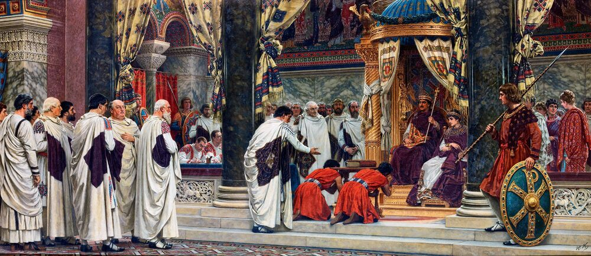

B1 · Work & Career
The Text
Play the audio and follow along, then read it again on your own. Hover over a highlighted word to see what it means.
Listen & Read
Every Day, and Right Now
Two colleagues, one Tuesday — and the difference between what you do and what you are doing.
Every day, Emily works as a financial analyst in an office on the twenty-second floor. She manages a set of client portfolios, she arrives at about half past seven because the market opens early, and she leaves at six unless something has gone wrong. Michael sits opposite her. He advises clients on where to put their money, he talks on the phone for most of the day, and he claims he has never once eaten lunch away from his desk.
That is what they do. What they are doing at this moment is something else entirely.
Right now Emily is standing at the window with a coffee going cold in her hand, looking at a chart on her tablet that she does not believe. One of her positions has moved eleven per cent since yesterday afternoon and nothing in the news explains it. She is not panicking — she does this perhaps four times a year — but she is going to have to call somebody in about ten minutes and say she does not yet know why.
Michael is on the phone, as usual, but he is not advising anyone. He is listening to a client explain, at length, why he wants to sell everything and put it all into one company his brother-in-law has recommended. Michael is saying “mm” at intervals and writing the word NO on a piece of paper and underlining it twice. He will spend the next quarter of an hour talking the man out of it, and he will succeed, and the client will tell people afterwards that it was his own decision.

This is the difference the two tenses carry. “Emily manages portfolios” tells you her job. “Emily is standing at the window” tells you her Tuesday. The first is true in general and says nothing about today; the second is true now and says nothing about whether it ever happens again. English keeps them apart more strictly than most languages do, which is why learners often describe a photograph in the present simple and sound as if they are reading a job description.
There is one more thing worth noticing here. Some verbs resist the continuous altogether. Michael believes the client is wrong; he is not believing it. Emily knows the market is unpredictable; she is not knowing it. Verbs about states of mind — know, believe, understand, mean, want — usually stay in the simple form even when you are talking about this exact moment, and that is the rule that catches people out.
At six, Emily will go home and Michael will stay for another hour, as he does most days. Tomorrow both of them will arrive early, and the routine will describe them again until something happens that it does not cover.
Vocabulary
- analyst — someone whose job is examining data and drawing conclusions
- portfolio — the collection of investments belonging to one client
- to advise — to tell someone what you think they should do
- to panic — to lose control because of sudden fear
- at length — for a long time and in detail
- brother-in-law — the husband of your sister, or your spouse's brother
- at intervals — repeatedly, with gaps in between
- to underline — to draw a line under something for emphasis
- to talk someone out of something — to persuade them not to do it
- state of mind — a mental condition such as knowing, believing or wanting
- to catch someone out — to trap someone in a mistake
- routine — the fixed pattern of what somebody usually does
Interactive Exercises
Practice
Complete each exercise, then click Submit to see your score and an explanation for every answer.
Speaking & Writing
Discussion
There are no right answers here — use these to practice speaking, or write a short answer to each.
- Describe your job in three sentences using the present simple, then describe this exact moment in three using the continuous.
- “The client will tell people afterwards that it was his own decision.” Why does good advice often get remembered that way?
- Which state verbs does your own language allow in a continuous form? Where does that cause trouble in English?
- Describe a photograph you have on your phone, in the present continuous.
- Write about 150 words about a colleague: what they do every day, and what they are doing right now.